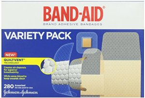

Wound Care Supplies
The following products are vital for the care of wounds. Information about proper wound care can be found further below.
Click on the links below to purchase these items at a discount through Amazon.com !
ACE Bandage
Provides essential compression to wounds to promote healing and reduce edema
Ace Bandage

Dry Sterile Dressings
Sterile bandages to apply to wounds

Apply ABD pads for wounds with significant drainage
ABD Pads
Coban Wrap
Used to wrap and seal bandages

Band-Aids

Anti-Biotic Ointment


Foot Ulceration Treatments
The primary goal in the treatment of foot ulcers is to obtain healing as soon as possible. The faster the healing, the less chance for an infection.
There are several key factors in the appropriate treatment of a diabetic foot ulcer:
- Prevention of infection
- Taking the pressure off the area, called “off-loading”
- Removing dead skin and tissue, called “debridement”
- Applying medication or dressings to the ulcer
- Managing blood glucose and other health problems
Not all ulcers are infected; however, if your podiatrist diagnoses an infection, a treatment program of antibiotics, wound care, and possibly hospitalization will be necessary.
To keep an ulcer from becoming infected, it is important to:
- keep blood glucose levels under tight control
- keep the ulcer clean and bandaged;
- cleanse the wound daily, using a wound dressing or bandage; and
- avoid walking barefoot.
For optimum healing, ulcers, especially those on the bottom of the foot, must be “off-loaded.” You may be asked to wear special footgear, or a brace, specialized castings, or use a wheelchair or crutches. These devices will reduce the pressure and irritation to the area with the ulcer and help to speed the healing process.
The science of wound care has advanced significantly over the past ten years. The old thought of “let the air get at it” is now known to be harmful to healing. We know that wounds and ulcers heal faster, with a lower risk of infection, if they are kept covered and moist. The use of full-strength betadine, hydrogen peroxide, whirlpools, and soaking are not recommended, as these practices could lead to further complications.
Appropriate wound management includes the use of dressings and topically-applied medications. Products range from normal saline to growth factors, ulcer dressings, and skin substitutes that have been shown to be highly effective in healing foot ulcers.
For a wound to heal, there must be adequate circulation to the ulcerated area. Your podiatrist can determine circulation levels with noninvasive tests.
Tightly controlling blood glucose is of the utmost importance during the treatment of a diabetic foot ulcer. Working closely with a medical doctor or endocrinologist to control blood glucose will enhance healing and reduce the risk of complications.
Surgical Options: A majority of non-infected foot ulcers are treated without surgery; however, if this treatment method fails, surgical management may be appropriate. Examples of surgical care to remove pressure on the affected area include shaving or excision of bone(s) and the correction of various deformities, such as hammertoes, bunions, or bony “bumps.”
Healing time depends on a variety of factors, such as wound size and location, pressure on the wound from walking or standing, swelling, circulation, blood glucose levels, wound care, and what is being applied to the wound. Healing may occur within weeks or require several months.
Information From The
American Podiatric Medical Association

 Redithotic Orthotics
Redithotic Orthotics